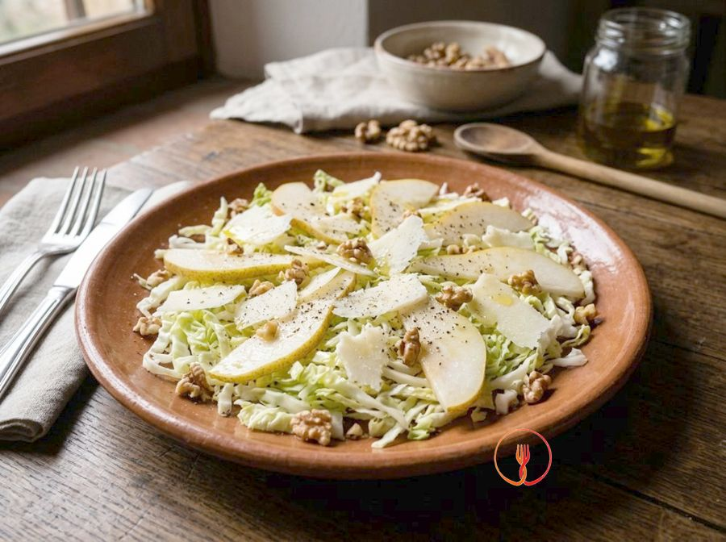

Carpaccio di verza al limone con pere e pecorino
Un antipasto fresco e croccante dove la verza cruda viene ingentilita da una marinatura agrumata e abbinata alla dolcezza delle pere.
Ingredienti
- Verza (solo il cuore)400 gr
- Pere Abate2
- Pecorino Romano DOP in scaglie80 gr
- Gherigli di noci40 gr
- Limone (succo)1
- Olio extravergine di oliva4 cucchiai
- Sale finoq.b.
- Pepe nero macinatoq.b.
Allergeni
Frutta a guscio, Latte
Procedimento
- Lavare accuratamente la verza e rimuovere le foglie esterne più coriacee.
- Utilizzare una mandolina per tagliare il cuore della verza a striscioline finissime, quasi trasparenti.
- In una ciotolina, preparare un'emulsione mescolando il succo di limone, l'olio extravergine, il sale e il pepe.
- Disporre la verza in una ciotola capiente e irrorarla con l'emulsione preparata.
- Massaggiare la verza con le mani per circa 2 minuti: questo passaggio è fondamentale per rompere le fibre e renderla tenera.
- Coprire la ciotola e lasciare marinare in frigorifero per almeno 30 minuti.
- Poco prima di servire, sbucciare le pere e tagliarle a fette molto sottili, bagnandole con qualche goccia di limone per non farle annerire.
- Comporre il piatto disponendo la verza marinata alla base, aggiungendo le fettine di pera, le scaglie di pecorino e le noci tritate grossolanamente.
Valori nutrizionali (stima)
| Per porzione (253 g) | Per 100 g | |
|---|---|---|
| Energia | 1435 kJ / 343 kcal | 565 kJ / 135 kcal |
| Proteine | 8.1 g | 3.2 g |
| Carboidrati | 23 g | 9.2 g |
| di cui zuccheri | 14 g | 5.4 g |
| Grassi | 26 g | 10 g |
| di cui saturi | 6.2 g | 2.5 g |
| Fibre | 6.3 g | 2.5 g |
| Sale | 1.2 g | 0.5 g |
Valori stimati con l'AI su dati medi CREA / USDA: sono indicativi e non sostituiscono il parere di un medico o di un nutrizionista.
Apri la ricetta nell'app per la lista della spesa, le schede ingredienti e i negozi vicini.